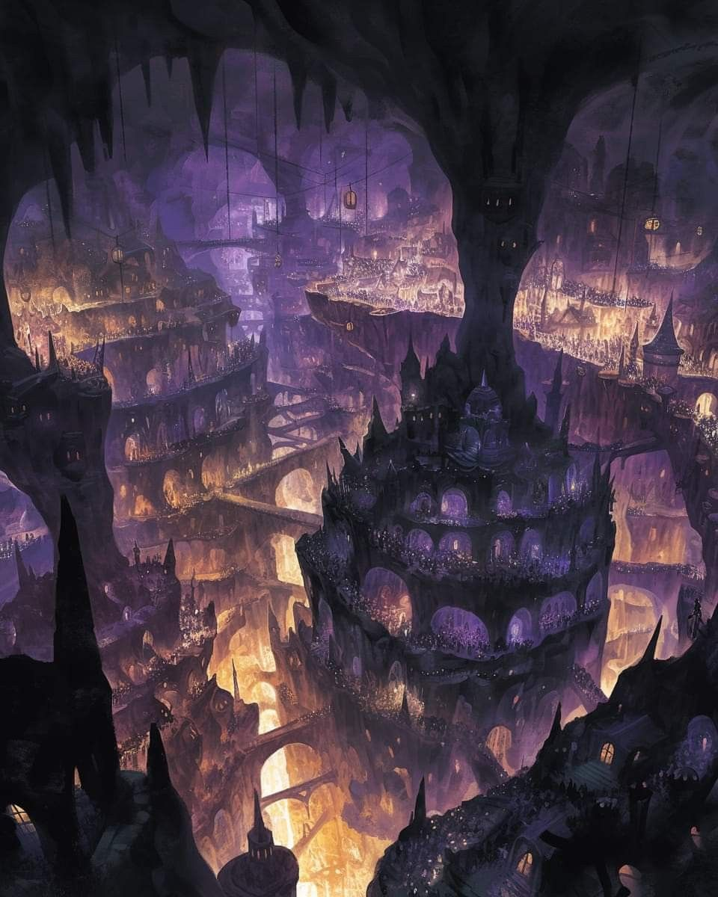

Menzoberranzan
Beneath hollow mountains and caverns that breathe darkness lies Menzoberranzan: the capital of the fallen lineage, cradle of the Void Elves. It is not merely a city; it is a wound in the world. Its twisted towers gleam with a pale light, shaped by magic that does not create but consumes. Shadows move even when no one walks; the architecture responds to thought rather than to hand. Here, survival is law. Its inhabitants descend from the ancient primordial exiles, those whom the light forgot and who heeded the whisper of the Void. Their white eyes watch every corner, capable of seeing what the darkness attempts to conceal.